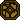
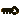
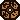
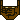
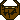
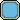
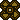

Version: 1.0
Compatibility: Windows
Features
Complete a series of puzzles in a low-key, minimalistic game.
Solve Puzzles
The objective is to open all of the pods  with keys 
When you've opened all the pods in a level, you'll be taken to a level complete screen, where you can go on to the next one.
If you're stuck, I recommend checking out the Strategy Tips section to get a better handle on how the different tokens and mechanics work.
Create New Levels
To create new levels you'll need to get Moxybox Level Creator.
A "complete" level requires a minimum of: 1 Player token, 1 Key token, and 1 Gate token. Total number of Keys and Gates should be the same and if Teleport tokens are used, you must use 2 (two to travel between).
Interface (keybinds): Tokens to place are cycled through with the mouse wheel. Other keybinds are displayed in the UI and are customizable by clicking on them and hitting the key to replace them.
Interface (naming): The Stat area has a checkbox that will enable or disable it. Note that other parts of the program are unavailable while it is checked. This is to prevent overlap in key input. Make sure to set Creator Name to a unique name you want to be tied to your creations and use a unique Level Name for each level you create. This is important in the generated ID for your level coming out unique.
Difficulty: It's recommended to set Difficulty to at least 2. Levels are sorted by Difficulty in the main game and Difficulty of 1 is reserved for the basic Intro level, so that it's the first one the player sees.
Turns: It will likely require some play testing of a level to determine what amount of Turns is sensible. I typically start out with a high number and then keep track of how many turns are left when I'm about to complete the level. Depending on how difficult you want the level to be, you can leave lots of room for error with extra Turns to complete it, or make the number very strict to a particular approach to completion.
Types of Tokens:
-  Player: Only one can be placed and every level should have one.
-  Pusher (Patroller): Will patrol on the path you set, vertically or horizontally. If a player moves into them or vice-versa, the player gets pushed backwards two squares. If the player hits a Block along the way, the Block will be destroyed. If the player hits a Hazard at the end of being pushed backwards, the level is automatically failed.
-  Sucker (Patroller): Will patrol on the path you set, vertically or horizontally. If a player moves to within one square of them or vice-versa, the player gets pulled toward them one square. If the player hits a Block along the way, the Block will be destroyed. If the player hits a Hazard at the end of being pulled in, the level is automatically failed.
- Block: The main way to block off Key and Gate from being reached. Player can't get past a Block unless they are pushed or pulled into a Block by a Patroller.
-  Hazard: An alternative way to block off Key and Gate from being reached. Player can only cross a Hazard by being pushed far enough to land on the square across from it. Keep in mind if there's no way back, the player may be trapped, so take this into account when designing levels that use Hazards.
- Key: Used to open Gates. Levels should have at least 1 Key and 1 Gate, and the number of them should be the same.
- Gate: Requires Key to open. When the Player has opened all Gates, the level is complete. Levels should have at least 1 Key and 1 Gate, and the number of them should be the same.
- Portal: Landing on a Portal will move the Player to the location of the other Portal on the board. Levels can have 0 Portals or 2. No other amount is supported.
- Spring Trap (Utility): Player will "pick up" Spring Traps when they land on them. They can be placed and picked up as many times as the Player wants. If a Spring Trap in its deployed state is landed on by a Patroller, the Patroller will be pushed back two squares. Through placing these strategically, the player can impact where a Patroller is on the board, changing, for example, where the Player can be pushed back to, to enable them to hit Blocks they wouldn't otherwise be able to reach.
-  Magnet Trap (Utility): Player will "pick up" Magnet Traps when they land on them. They can be placed and picked up as many times as the Player wants. If a Patroller comes within two squares of a Magnet Trap in its deployed state, the Patroller will be pulled toward it one square. This can, for example, cause a Patroller to patrol one section over, which can change where the Player can be pushed back to, to enable them to hit Blocks they wouldn't otherwise be able to reach.
Completion and Testing:
- When your level is complete, make sure to Save it. You can then go to the folder where it's saved and copy the file. Then go to the LevelData folder in your documents area for Moxybox and paste it in. Your documents area for Moxybox should look something like: C:\Users\Robert\Documents\Robert Jay Myers Apps\Moxybox\LevelData
- You can also paste directly into the LevelData folder where Moxybox is installed, but this is not recommended, since permissions are likely to be stricter if you installed in Program Files and it's easier to keep track of custom levels if you place them in the documents area.
- In Moxybox, you can use the DEBUG commands F1 and F2 to help you test new levels. F1 will skip the current level to the next one and F2 will bring up a dropdown where you can pick a certain level to "jump to." The latter, in particular, will enable you to load up Moxybox, jump right to the level you need to test, and see how it plays. These are thought of as DEBUG, for testing, and are not announced to the Player in the UI. It is not recommended to use them in regular play.
Create New Themes
The first thing you'll need is a template to work from. You can download an example mod theme here, which contains all the required elements of a working theme, in the form of a basic recolor:
Moxybox Example Theme | Moxybox Level Creator Example Theme
Included is a theme.MoxyStyle file and some Images. If you've ever created a theme with CSS, you will find some familiarity here. Moxybox uses Qt library stylesheets for styling various aspects of the game.
You can download the original Moxybox and Moxybox Level Creator images here, if you wish to use them as a starting point, rather than the example recolored images:
Moxybox Images | Moxybox Level Creator Images
Note, however, that you don't have to use them as a starting point. As long as the images for your theme are the same size as the originals, they should work. You can do basic recolors or create an entirely new theme. For example, you could turn the tokens into industrial-looking design, with dark metals, and change the stylesheet colors to match. Moxybox is themed as a jungle-like, overgrown look, but you don't have to stick with that.
You could even change the perspective of the art style somewhat (Moxybox is top-down).
The README included in the example has a bit more information on the specific details and the aim here is to provide a fairly open-ended palette of room for customization. Unlike Moxybox Level Creator, you won't have an interface for guiding you through the process, but with some basic knowledge of CSS and some artistic skill, it should be fairly straightforward.
The location for a custom theme should be in your home directory, looking something like this: C:\Users\Robert\Documents\Robert Jay Myers Apps\Moxybox\Mods\Theme
So in that example, the theme.MoxyStyle would go directly into the Theme folder. And any Images would go into: C:\Users\Robert\Documents\Robert Jay Myers Apps\Moxybox\Mods\Theme\Images
Strategy Tips
Not Math (yay):Moxybox is all about using your environment to strategically push and pull you around to get past obstacles. So kinda like real life.
At its most basic, you'll have an obstacle that looks like this and there may be a Key or Gate behind it.
Walking into the obstacle won't get you past it. You'll need force of impact. Force of impact is achieved by being pushed or pulled. Being pushed or pulled involves walking into the path of, or walking into, one of these patrolling little machine things:
Patroller (Pusher):
Patroller (Puller):
These patrolling machine things are not out to get you and are just there for inexplicable reasons. However, they can ruin your day if you're not careful. Being pushed into a Hazard is an instant fail of the current level. You'll have to start over. Sometimes you'll need to get past a Hazard by being pushed over it. Fret not! The game has no sound, so no frets are present, and also, it's a turn-based game with levels you can reset as many times as you want, so you can take your time and plan your moves. "If I go here, then they go there, then I go here, then they go there." It's chess all over again, except infinitely more simple and you're playing against yourself.
In addition to being pushed and pulled around by Patrollers, you can, on some levels, change where Patrollers are patrolling. You might land on something like this or this , which can then be deployed to look like this or this
These "Traps" can be picked up and deployed as many times as you want, and operate similar to the Patrollers. A Patroller who hits a Spring Trap will be knocked back two squares. A Patroller who comes within range of a Magnet Trap will be pulled in one square. With the right placement, you can influence where a Patroller patrols to, which may be critical for using force of impact to get pushed or pulled into an obstacle!
Finally, some levels will have a pair of Portals. As you might expect, landing on one Portal will transport you to the other Portal. Sometimes you'll need to use a Portal to get past an obstacle, or set of obstacles.
Math (ew):Many levels have a particular approach to beating them within the allotted number of turns. Some have more room for error than others. Some will have multiple approaches, but little room for error in all of them.
In many cases, all you need to work out is how to get your Player token next to a Pusher in the right place or next to a Puller in the right place. Sometimes this may require moving back and forth a bit, until the Patroller is in the right spot. The key is often to do this without wasting unnecessary moves, as you may require a number of additional moves to see a window of opportunity open again.
Perhaps the most tricky usage of moves is using a Spring Trap in the right spot to knock back a Pusher Patroller two squares past their patrolling leash point, so that you can be pushed by them far enough to get past an obstacle or two (but this is rare in the default levels). Sometimes you may have to get knocked back to offset the difference in position between you and the patroller to be able to navigate to the right spot to do this. This is where math comes in. Since it's a turn-based game, you're always moving at the same rate as Patrollers, so being in the wrong position now may be the wrong position later. However, if you get Pushed or Pulled, you can potentially change the offset between where you're at and the Patroller is at.
About
Moxybox is a project I originally did in C++ console as a simple grid-based game, which then evolved into a graphical implementation using SLD2 library. Fast forward to the midst of the Covid19 pandemic lockdown, I went back and adapted it to use Qt library, including making a number of changes, additions, and improvements.
I wanted to do something that could help people in some way with getting through the lockdown and the anxiety of needing to stay at home for so long, so I decided to adapt my old game and release it for free and open source. It is my hope that it will be something people can enjoy playing or creating with for some time.
Credits
Moxybox uses Pixellari font created by Zacchary Dempsey-Plante, with permissions described on https://www.dafont.com/pixellari.font, as quoted below:
Providing this for absolutely free, since I myself found it difficult to find a font I liked that was completely usable in commercial projects. All I ask is that I get credit for the making of the original font.